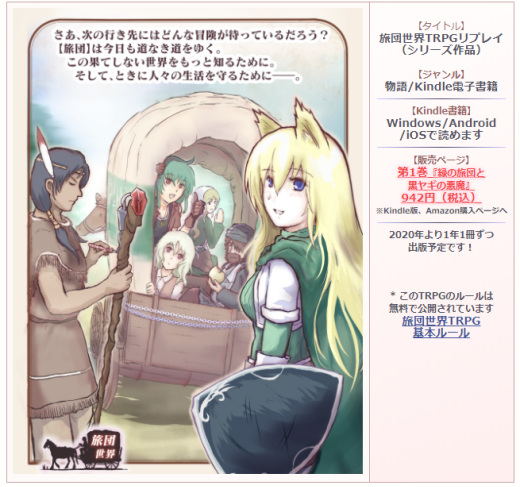

シルバーセカンド開発日誌
2020年05月
■
2020-05-23 (土) 片道勇者ノベライズ裏資料動画6▼【片道勇者ノベライズ裏資料動画6】
ノベライズ裏資料「仲間同士の会話見本」の第6回を公開しました！
今回は「傭兵パンティ×魔王」「傭兵パンティ×妖精イーリス」
「ヴィクター王×黒騎士デュークガルツ」の3つ分！
【Youtube動画 片道勇者ノベライズ裏資料 第6回】
コメントも見たい人は【ニコニコ動画版】もございます。
【傭兵パンティ×魔王】
「この組み合わせの会話とか絶対に入らないでしょ！」
と思ったので一番短い内容となっています。
が、実はノベライズ内では二人の会話が存在し、
「パンティの何気ない発言に対して魔王が意外な反応をする（しかも原作ネタを使って！）」
という、この会話見本の方向性をそのままにうまいこと取り入れてくださっていたので、
「ノベライズのライター様の手腕すげぇ！」と今さらながら感じさせられました。
原作者の想定を上回るほどに、アイデアのパズルのピースの組み合わせを
熱心に考えてくださっていたということですからね。
【傭兵パンティ×妖精イーリス】
ここは原作でもちょいちょいあった、
「パンティがボケてイーリスがツッコむ」という関係です。
傭兵パンティはツッコんで欲しくてしょうがないタイプなので、
すぐツッコミ入れちゃうイーリスとは基本的に仲がいいですね。
逆に傭兵パンティと相性が悪いのは、まじめな感じのキャラでしょうか。
「妖精イーリスをかじると死ぬ！」という話は
『片道勇者開発記』で明らかになったお話です。
イーリスの体液は、1滴以内でも体に入ると酔った状態になってしまい、
体ごと食べるとまず命を落としてしまうくらいの猛毒なんですよ。
【ヴィクター王×黒騎士デュークガルツ】
ヴィクター王と黒騎士デュークガルツの共通の話題は「フリーダ王女」です。
といってもフリーダ王女のことを気にしているのは基本的にデュークガルツの方で、
ヴィクターはあんまり気にしていない（ただし完全に道具とも思っていない）という感じですね。
フリーダはゲームが始まる前に色々あって悲惨な目に遭っているのですが、
コミュニケーションが苦手な二人はフリーダ王女の心のケアができていません。
ノベライズ内では二人の会話はあまり入りませんでしたが、
デュークガルツがフリーダ王女のことを
どう思っているかを間接的に示す材料にはなっていたようで、
デュークガルツは主人公である騎士に
フリーダ王女の助けになって欲しいと言ってきます。
やっぱりヒロインの凍った心を溶かす役目は主人公じゃないと！
ということで、会話見本は今回で21本中の16本をご紹介しました！
残りは2回くらいです、お楽しみに！
この資料から作られたノベライズが気になる方はこちら！
↓

片道勇者 滅びの闇と繰り返す英雄
Amazonページへ
Kindle版 ￥1,386 / 書籍版 ￥1,540 ■
2020-05-09 (土) 旅団世界リプレイ どんな方向性？▼【旅団世界TRPGリプレイ公式ページできました】
『旅団世界TRPGリプレイ』、公式ページを作成しました！
『旅団世界TRPGリプレイ』公式ページ

すでに1話リプレイや1巻に多くの人気投票コメントをいただいております。
みなさま本当にありがとうございます！
現在発売中のリプレイ1巻はKindle Unlimitedでしたら
無料で読めますので、もしよかったらぜひどうぞ！
時間つぶしとしては十分な品質・量だと思います。
さて、細かい内容紹介は公式ページを見ていただくとして、
今回はこのリプレイの全体的な「方向性」をご紹介していきます！
【旅団世界TRPGリプレイはどんな方向性？】
●お話はすみからすみまでスモーキングウルフ味！
私が全てのシナリオを作っててGM(ゲームマスター）をしているのですから当然ですが、
お話は全体どこをとってもだいたいスモーキングウルフ味です！
表向きには明るく進んでいくけれど、ところどころに残酷な部分や生々しい部分、
予想外に情けない部分が潜んでいる。
そしてたまに、NPCからプレイヤーキャラへの好感度が跳ね上がりすぎて
めちゃめちゃなことになるイベントが起きる――。
私のゲームでも非常によくある展開ですね！
放っておくとそんなの作っちゃう人間がGMをやると、やっぱりTRPGでもそうなるようです。
また、プレイヤーのみんなもシリアスすぎるのには耐えられない人たちだったり、
私のシナリオやキャラクターに合わせてくれる人たちなので、
全員の味が混ざり合いながら、私自体の味も
さらに色んな方向に伸ばしてもらっています。
どんなシナリオでも、よいプレイヤーに恵まれることで
なお真の良さを発揮できますから感謝の限りです。
●サイコロの言うことには従うカオス展開！
どんなにめちゃめちゃな流れになっても、
私はサイコロの出た目は基本的に尊重するプレイをします。
なので、「なんでサイコロの女神様はこんな結果をお選びになったんだ！？」
と思っても、GMたる私はだいたいその結果を採用して押し進めます。
コンテンツ的には「GMの考えたストーリー重視」の方向性にも
見えるかもしれませんが、どちらかというと本作は
ランダム感も最大限に楽しんでいくプレイのつもりです。
たとえばこれからお世話になる旅団の団長にクリティカルで大ダメージを与えてしまい、
生死判定のサイコロ処理にも成功せずに死んじゃったとしたら、
安易に生き返らせずにそのまま団長の死を受け入れてお話を進めますし、
男の子NPCがサイコロの間違いでうっかりおっさんキャラを
好きになってしまってもそのまま進めます！
そういう場面が来ると、ちょっと焦ると同時に
「おいしい展開来た！」と思うのが私です。
なので、
「理想通りにいけば普通のいい話になってるかもしれないはずが、
どうしてこんなことになっちゃうんでしょうね？」
という展開をたびたびお楽しみいただけるでしょう。
私がこれまで作ったADVのお話でも、
だいたいそんな感じの流れが多かったのではないかと思います。
（もともとTRPGのカオスさが好きな人間が作ったアドベンチャーゲームなので、
「サイコロの目がカオスだったらどんな話になるかな！？」
という考え方でお話を作ることも多いんですよ）
●プレイヤーが優秀、もとい経験が豊か！
プレイヤーが全員かなり経験のあるゲーム開発者であり、
かつ数値に強いゲーマーでありながらリアルのお仕事もこなせる人たちなので、
先読み能力や、問題への対応力が全体的に半端なく高いです。
小説などで「あーなんで登場人物にポンコツ多いんだよぉ！」という部分があると
ストレスを抱えがちな読者の方も中にはいらっしゃるかもしれませんが、
本作では「主人公キャラ」をリアルの人間が演じていながら、
そういった意味での心配は基本的にご無用です。
仮に何らかの弱い部分があっても、それならそれでみんなそれを自覚していて、
かつネタにできるくらいには大人なので強いです。
一方で、「あえて演じるポンコツ成分（道化っぽさ？）」もきっちり含まれております。
また、ゲーム内とはいえ「実際の社会でもこういう対応は割と通用するよね」と
思えるアクションや言動をしっかり取ってくれますし、
さすがにうまくいかなさそうな言動だったら私も通さないので、
「大人はこうやって問題を解決するんだよ」という
一つの簡単な見本となるようなムーブを見たい人には、
このリプレイは地味におすすめの内容ではないかと考えています。
私が小学生の頃に読んだTRPGリプレイでも、
「大人にとっては当たり前」だと感じられる普通の対応をしている場面でさえ、
子供の自分にとってはすごく貴重な勉強になりましたからね！
なので、若い方にこそおすすめしたい！
小学生高学年以上の方なら快適にお楽しみいただけるように
漢字のルビもしっかり振ってありますので、その点もご安心ください。
若い方もどんどんTRPG沼に誘い込んでいきたいと思います！
なので、よければお子様に活字（？）を読ませたい親御さんもよろしくお願いします！
健全な内容かは分かりませんが！
ネットでたまに出るエッチな広告よりは「だいぶ安全」な、
大人になる過程で必要そうな刺激くらいは入っております！
でも「なぜかケモ耳っ子に目覚めた」とか言われたら私のせいです、ごめんなさい。
●この先も広がるスモーキングウルフ二次創作ワールド！
『旅団世界TRPGリプレイ』シリーズは私の作品から
シナリオのモチーフを出していくことを常に狙っております！
たとえば、すでに1巻の巻末予告には書いていますが、
2巻では『片道勇者』の『闇』が登場したり、半獣人のネムリなる人物が登場したりと、
遠慮なく過去作と絡めていくスタイルで行く予定です！
さらには、私の作品には『時の扉』という異世界につながる便利設定もあるわけで、
その気になれば時代も世界も越えて物語を展開させることも可能です。
なのでもし今後興味が湧いた巻があれば、私のメイン作品のお供によければぜひどうぞ！
途中の1巻だけ読んでも、お話的に十分に楽しめるように作りたいとは考えております。
（全体を通して10％分くらいは前巻からの続き要素があるかもしれませんが、
9割は最新巻だけ読んでも問題なく楽しめるようにしたいです）
といった感じの『旅団世界TRPGリプレイ』シリーズ！
メイン開発の脇でこれからもちょいちょい作っていきますので、
興味を持たれたかたは、よければお楽しみに！
読んでくださった方は、巻末から飛べる人気投票や、
レビュー、評価などもお待ちしております！
（今はレビューなしでも、Kindleアプリの最終ページから★の評価だけ付けることもできるようです）
『旅団世界TRPGリプレイ』は、ただいま第1巻が発売中です。
↓
『旅団世界TRPGリプレイ① 緑の旅団と黒ヤギの悪魔』
Amazon購入ページへ
税込￥942 Kindle Unlimited￥0

今後も1年に1巻ずつ出していく予定なので、
「面白そう」と思った巻だけでも手に取っていただければうれしいです。
先にも言いましたが、2巻目は『片道勇者』モチーフの物語が決定しております！
非常にゆっくりとした足取りですが、来年もお楽しみに！ ■
2020-05-02 (土) 片道勇者ノベライズ裏資料動画5▼【片道勇者ノベライズ裏資料動画5】
ノベライズ裏資料「仲間同士の会話見本」の第5回を公開しました！
今回は「フリーダ王女×妖精イーリス」「傭兵パンティ×ヴィクター王」
「傭兵パンティ×デュークガルツ」の3つ分！
【Youtube動画 片道勇者ノベライズ裏資料 第5回】
コメントも見たい人は【ニコニコ動画版】もございます。
【フリーダ王女×妖精イーリス】
何を話してもネタバレになりそうですが、
この二人は『片道勇者開発記』のサイドストーリーにおいて
深いつながりがあります。
特に、ゲーム内の状況では妖精イーリスからフリーダ王女に対して
一方的に特別な感情を抱いており、
どのくらいの距離で話せばいいのか分からず
二人は付き合いづらい関係になっています。
【傭兵パンティ×ヴィクター王】
珍しく人間の男同士（！）ということで
意外と仲良くなれそうな二人です。
パンティはこれまで色々目立ってしまったせいで苦労してきてますし、
ヴィクター王も長年の様々な苦労があったでしょうから、
そのあたり、通じ合うところがありそうです。
というのと、ヴィクター王は同じ立場で
なれなれしく接してくれる相手が意外と好きです。
立場は違えど、仲良くやれるでしょう。
【傭兵パンティ×デュークガルツ】
デュークガルツは傭兵パンティを話し相手としては認めないでしょうけれど、
戦いにおいては二人は自然と協同してあたることができるでしょう。
話をするよりも剣で語った方が通じ合える関係だと思います。
この資料から作られたノベライズが気になる方はこちら！
↓
片道勇者 滅びの闇と繰り返す英雄
Amazonページへ
Kindle版 ￥1,386 / 書籍版 ￥1,540
これで会話見本は21本中の13本！
動画はまだまだ続きます。次回もお楽しみに！ 2020年05月
Copyright © SmokingWOLF / Silver Second
 カテゴリ: 片道勇者
カテゴリ: 片道勇者 カテゴリ: 片道勇者
カテゴリ: 片道勇者